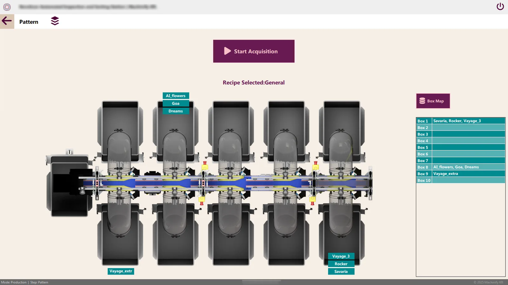
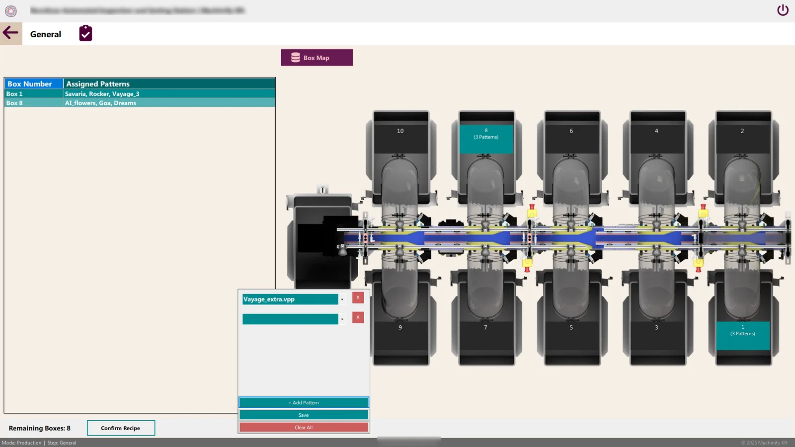
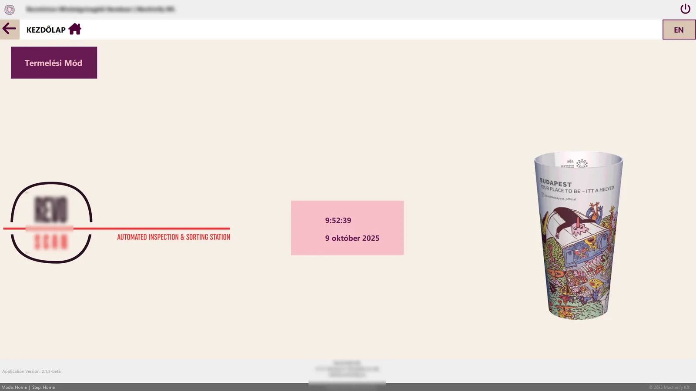

A SCADA-style station that inspects printed reusable cups with six cameras and tells a Siemens PLC which of ten boxes each cup goes into, within two seconds.

The machine map: each print pattern is assigned to a box. Client details removed.
Context
Reusable cups come off the line with different printed patterns and the occasional defect. Each cup has to be checked from several angles and sent to the right box, at line speed.
The cameras are split across two PCs, so the station needed two PCs that behave like one machine, plus a reliable link to the PLC that moves the cups.
Requirements
| Need | Target |
|---|---|
| Inspection | 6 images processed in parallel |
| Latency | Result and sort signal to the PLC within 2 s |
| Sorting | 10 boxes, any pattern to any box |
| Uptime | The PLC link must survive dropped messages |
| Operators | English and Hungarian, switchable while running |
Architecture
Hover or tap any box for a plain-English explanation.
Key decisions
Screens
Client details removed on purpose.


Outcome